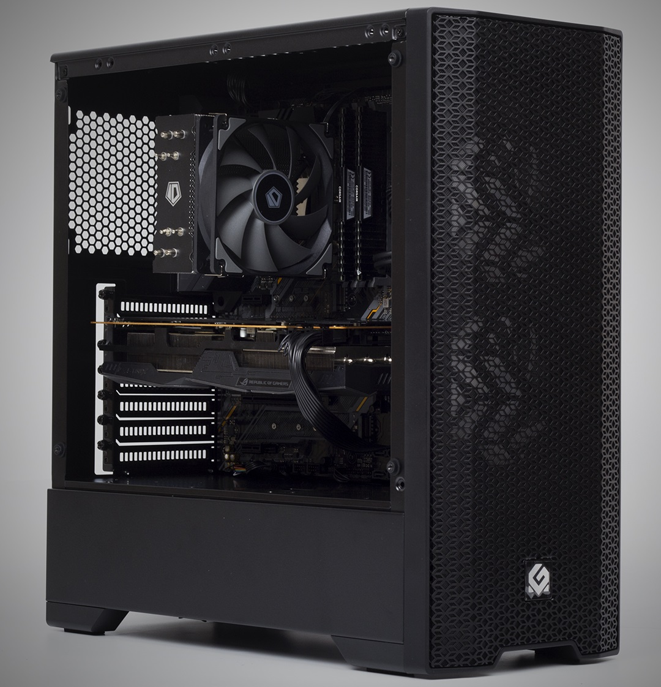
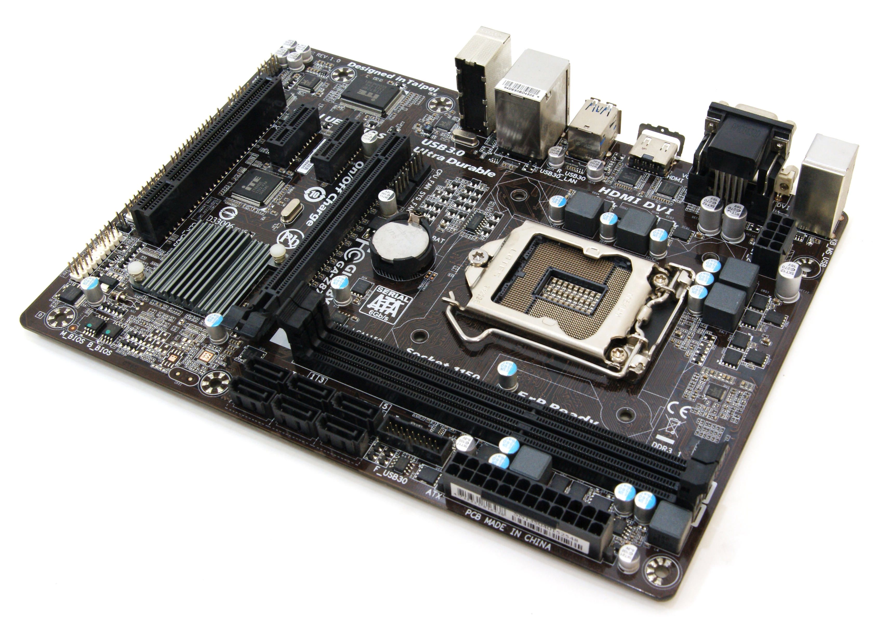
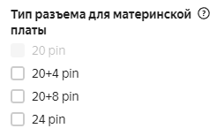
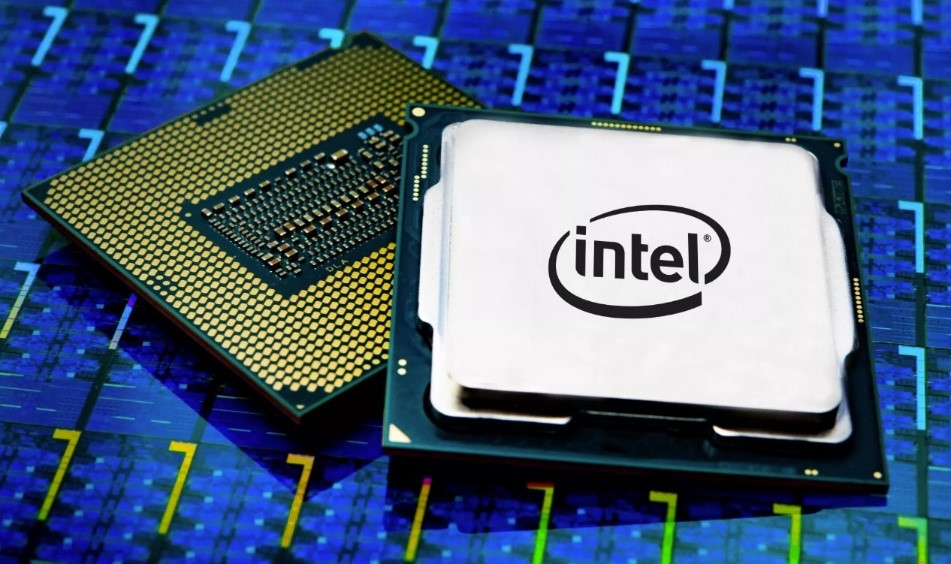
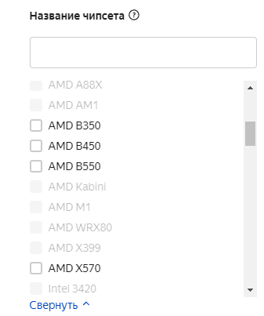
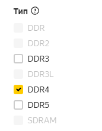
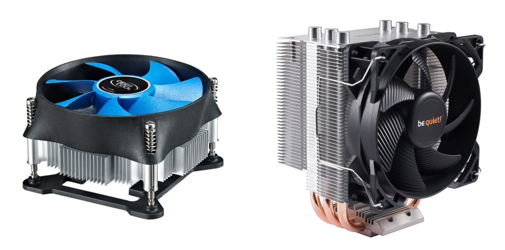

Краткий гайд по полному сбору своего ПК
(без воды и для самых маленьких)
Общие рекомендации по сборке ПК
В этой статье очень кратко собрана вся необходимая информация, чтобы, почти не имея до этого момента никаких знаний и опыта, вы смогли собрать свой собственный ПК без “лишних” специалистов уже через 30 минут прочтения этой статьи. Потому что, все, что от вас требуется в этом деле – лишь достаточная внимательность при сверки нужных фильтров в интернет-магазине между комплектующими и малейшее понимание того, что вы сами хотите видеть от своего ПК.
Собрав свой компьютер сами, вы сэкономите минимум 15000 рублей, а то и 30000, что точно стоит того, чтобы потратить немного времени на эту статью, получить новые знания и, опять же, заработать/сохранить большую часть денег.
Что же вообще из себя представляют комплектующие ПК?
Без лишних определений и формальных представлений: все мы понимаем, что комплектующие — это части, из которых состоит любой компьютер или же ноутбук, которые выполняют свою определенную функцию.

Логично, что для минимальной работы любого ПК нам нужны далеко не все комплектующие, то есть некоторые являются дополнительными и необязательными, но об этом чуть позже.
Любой ПК — это некоторый механизм или система, в которой её составляющие очень быстро общаются между собой, передают информацию и «что-то» с ней делают. Из этого, очевидно, что как раз таки, чтобы разобраться на довольно поверхностном уровне в комплектующих ПК и их функциях, нам просто нужно понять, что происходит в каждом из них. После того, как мы даже совсем немного разберемся в функционале комплектующих.
Для того, чтобы собрать ПК, в виде коробки с кнопкой, торчащими проводами и знакомой операционной системой, нам необходимо, может вы не поверите, но всего 6 обязательных комплектующих (не считая видеокарту).
Содержание
Итак, давайте же назовем основные комплектующие:
- Процессор
- Материнская плата
- Оперативная память
- Жёсткий диск
- Корпус
- Видеокарта (для игрового ПК)
- Блок питания
В самом конце есть видео с физической сборкой ПК
Как уже было сказано ранее - не все комплектующие супер-обязательные, а точнее, для компьютера в том виде, в каком мы все привыкли его видеть (опять же, можно и меньше, но мы же хотим более-менее красиво и в коробке с кнопкой, будем помнить об этом).
Теперь, когда мы узнали, какие комплектующие нам нужны, давайте немного и очень кратко разберемся в их святых функциях.
Итак:
- Центральный процессор (ЦП/CPU)
- Примерно 50% стоимости ПК при сборке с видеокартой
- Примерно 70%, если собираете без видеокарты
- Intel
- AMD
- Core i3 — начальный уровень, подходящий для несложных задач;
- Core i5 — включает в себя универсальные модели из среднего сегмента;
- Core i7 — мощные процессоры, в том числе для гейминга;
- Core i9 — премиальная продукция, которая, помимо гейминга, ориентирована на ресурсоемкие рабочие приложения;
- Core X — исключительно узкоспециализированные профессиональные задачи.
- Core i7-7700 — 7-е поколение Kaby Lake.
- Core i7-8700 — 8-е поколение Coffee Lake.
- Core i9-10900 — 10-е поколение Ice Lake.
- Intel Core i5-7400 — самый слабый среди всех i5 седьмого поколения.
- Intel Core i5-7500 — средний по производительности.
- Intel Core i5-7600K — самый мощный.
- Ryzen 3 — слабые процессоры, которые подойдут для офиса.
- Ryzen 5 — хорошо впишутся в домашнюю мультимедийную сборку.
- Ryzen 7 — производительные премиальные продукты для гейминга или серьезных задач.
- Ryzen 9 — девайсы с небольшим запасом производительности на ближайшие несколько лет.
- Ryzen Threadripper — модели, которые избыточны для домашнего пользования и нужны для работы с требовательными приложениями.
- Ryzen 5 1600 — первое (Zen).
- Ryzen 5 2600 — второе (Zen+).
- Ryzen 5 3600 — третье (Zen2).
- Ryzen 5 1400 — самый слабый среди Ryzen 5 первого поколения.
- Ryzen 5 1500X — обладает средней производительностью.
- Ryzen 5 1600 — самый мощный.
- G — процессоры с встроенным видеоядром. По умолчанию у AMD практически все модели линейки Ryzen лишены интегрированной графики.
- X — мощные ЦПУ, разогнанные производителем.
-
Если вы хотите подробней разобраться в разнице между Intel и AMD
(сокетах, какие являются устаревшими/новыми, про ядра/потоки и других тонкостях) - Материнские платы 
- Mini-ITX
- Micro-ATX
- ATX
- XL-ATX
- Оперативная память (ОЗУ/RAM)
- Количество слотов памяти
- Тип памяти
- Максимальная частота памяти
- Максимальный объем памяти
- Режим работы оперативной памяти
- Жесткий диск (или все-таки не жесткий…)
- SSD диски (не жесткий)
- SATA
- M2
- Супербыстрый (может вы слышали такое выражение: “на SSD все летает”)
- Менее энерго потребляемый
- Меньше тепло выделения
- Тихий
- В разы дороже
- Намного меньше объем
- Ненадежный (практически невозможно восстановить данные, если сломается)
- Малое количество циклов перезаписи
- HDD диски (жесткий)
- Корпус (и кулеры)
- Видеокарта (GPU)
- Блок питания (БП)
- Максимальное количество питания, которое он сможет подать на ПК
- Размер блока питания относительно корпуса, в который мы его помещаем
- Установленный стандарт эффективности
-
Чтобы корректно рассчитать количество питания, которое БП должен подать на ПК нам достаточно лишь аккуратно воспользоваться одним из многочисленных калькуляторов в интернете.
Лично от себя могу посоветовать калькулятор от XCOM-SHOP по ссылке
После расстановки всех выбранных комплектующих выглядит это примерно так:

Как мы видим, расставив комплектующие по параметрам, которые мы разбирали ранее, на данном примере мы получили Расчетную мощность БП равную 714.5 Вт. Естественно если в будущем вы еще и захотите «разгонять» комплектующие (делать их быстрее, но за бóльшую мощность и перегрев, который необходимо будет компенсировать более мощным охлаждением), то надо взять немного с запасом. Но в целом на данном этапе нам пока хватит найти БП с мощностью в 750 Вт.
-
С размером все проще, просто сверяем его с размером, указанном в характеристиках корпуса, который мы выбирали ранее.

Также, не забудьте сверить типом подключения с материнской платой, выбранной ранее.
 -
По поводу установленного стандарта эффективности… Если вы читаете данную статью, то вы не хотите знать об этом и без этого знания вам будет житься отлично и ПК вы спокойно соберете. Просто поставьте в фильтрах “80 PLUS GOLD” в интернет-магазине, при выборе БП и абсолютно никаких проблем у вас никаких не будет.

Если же вам так не терпится узнать об этом подробнее прошу внимания на это кратенькую статью.
На этом с блоками питания все и в целом, тоже никаких сложностей.

Чтобы правильно собрать ПК, для начала нам необходимо прежде всего понять для чего он нам нужен. Отправная точка сборки для любого ПК – это выбор ЦП, от мощности этого камня зависит параметр «на долгие годы», мы же не хотим покупать новый ПК уже через 3 года или пыхтеть, почему все таак долго грузится, неправильно определившись с выбором процессора.
Сначала хочу пояснить, с чего вообще вдруг ситуация, что нам нужно будет собирать новый ПК, ошибившись с необходимой нам мощностью процессора.
Сокет:
На самом деле ответ довольно прост. Так получается, что в будущем заменить процессор можно, но более проблематично, чем другие комплектующие. Почему? Потому что у процессора есть его форма - «ноги» или же «тычинка», а у материнской платы есть «пестик», то, что эти самые «ноги» у процессора принимает. В общем называйте, как хотите, это чтобы было проще понимать, но на самом деле называется это «Сокет».
Из информации выше, можно было понять, что Сокет есть как у процессора, так и у материнской платы и выглядит он вот так

Проблема в том, что, когда в будущем вам понадобится более мощный процессор, вы не сможете купить подходящий вам по Сокету, потому что он уже будет устаревший и процессоров с ним уже просто не будет в продаже.
Вывод из этого всего: не экономьте на выборе процессора!
Вложитесь в него, вы потом с легкостью замените другие комплектующие, но не процессор и вам придется пересобрать ПК заново с новым ЦП.
Ценность процессора должна составить:
Итак, перейдем к самому выбору процессора. На данный момент существует 2 фронта процессоров:
В их различиях работы с определёнными задачами есть тонкости, но в целом, вас это особо волновать не будет. Для пользователя важно лишь сколько денег ему придется выложить из своего кошелька на покупку бюджетного рабочего или крутого игрового ПК.
Поэтому, как бы для вас более надежной, привычной, знакомой, «ну все всегда вроде используют» и на слуху не была Intel и эта картинка:
с 2020 года все, кто шарит, уже давно выбирают эту:

и довольно скоро обгонит полностью процент использования процессоров Intel в компьютерах. По цене и тому, что вы хотите получить от ПК, надо выбрать именно процессор AMD Ryzen.
Для того, чтобы правильно выбрать процессор надо разобраться в довольно просто и удобной маркировке (почти одинаковой для Intel и AMD):
Для процессоров Intel:
Линейка Intel Core делится на такие классы:
После классификации процессор в названии имеет числовое обозначение. Первая цифра всегда означает поколение. На данный момент самым актуальным является 10-е. У каждого поколения имеется кодовое название. Например:
Как вы заметили, после поколения следуют ещё три цифры. Как правило, они отображают уровень производительности модели относительно других процессоров в одном поколении. Например:
В наименовании модели после цифр может быть расположена буква, которая указывает на отличительную характеристику процессора. Они могут комбинироваться различными способами. В этой статье я обращу внимание только на маркировку K (Например, Intel Core i9-9900k), что означает, что на высокотехнологичном заводе производитель разблокировал возможность самостоятельного пользовательского разгона ЦП.
Для процессоров AMD:
Линейка AMD Ryzen делится на такие классы:
Поскольку линейка Ryzen относительно молодая, она насчитывает не так много поколений, как у Intel. Определяется оно традиционно по первой цифре в наименовании. Также разработчик присваивает каждому поколению кодовое имя.
Последние три цифры схожим образом отображают производительность процессора в рамках одного класса и поколения. Чем цифры больше — тем ЦПУ мощнее.
У AMD некоторые буквы по значению отличаются от аналогичных у Intel. В данной статье обращу внимание только на буквенные-маркировки G и X:
Если вы собираете игровой ПК, конечно, лучше открыть YouTube и посмотреть сравнение показателя FPS – частоты кадров в определенных играх на ряду с видеокартой, которую вы в давнейшем захотите выбрать. Помните, что необходимо, чтобы показатель FPS был не ниже герцовки “Hz” вашего монитора (показатель максимальной частоты кадров, который ваш монитор может показывать, в большинстве случаев – 60Hz)
Некоторая информация про ЦП была взята с этих отличных статей:
Форм-фактор:
Во-первых, начав выбирать материнскую плату, мы должны определиться с размером нашего ПК, он еще называется форм-фактором. Они разные и их много, но здесь приведу я основные 4, а именно:
В данной статье я буду опираться именно на ATX, да и все привыкли именно к такому размеру десктопного ПК, поэтому в фильтрах материнских плат мы должны выбрать ATX

Сокет:
Далее, в зависимости от ранее выбранного нами процессора мы должны выбрать Сокет, о котором мы говорили ранее в разделе процессоров

Чипсет:
А теперь прошу внимания, фактически самое важное при выборе материнской платы – чипсет. Чипсет определят то, что может ваша материнская плата. Различия в букве (H, B, Z, X, Q, W) и в числе. Их много и их всех пихать в эту статью я не буду.
Для того, чтобы очень ускорить выбор чипсета, в фильтрах интернет-магазина выберите сокет и форм-фактор, как было сказано выше и посмотрите, с какими чипсетами материнские платы остались в магазине.
Например, при выборе сокета AM4 и форм-фактора ATX, в предложении мне остались только чипсеты: B350, B450, B550, X570, как на картинке ниже. Найти оставшиеся и разобраться в их отличиях вам и нужно, что не займет более 5 минут.
Для того, чтобы корректно выбрать чипсет хочу обратить внимание на следующие 2 великолепные статьи (смотрите только нужные вам чипсеты, все объяснено кратко, вы быстро все поймете):
Тип памяти необходимо выбрать DDR4 DIMM, о ней мы поговорим чуть позже.
Разъемы и наличие встроенных Wi-Fi и Bluetooth в материнской плате вы можете выбрать самостоятельно на свое усмотрение. Но даже если вы купите плату без Wi-Fi или Bluetooth, не пугайтесь, вы всегда сможете докупить их в качестве USB устройств и вставить их в плату.
Также не забывайте смотреть на производителей платы (GIGABYTE, ASUS, MSI и так далее). Посмотрите отзывы конкретной платы в интернет-магазине или на YouTube от конкретного производителя.

Объем RAM
Но для начала нужно понять сколько вообще Гигабайт RAM нам необходимо. Могу честно сказать сразу и без чего-либо лишнего: 8 Гб RAM – уже не хватит никому, чем бы вы не занимались на своем ПК. Самое приемлемое количество это 16 Гб – абсолютная необходимость 95% пользователей.
Но если вы работаете в Photoshop’е с фотографиями в высоких разрешениях или в видеоредакторе с видео качеством в 4K/60 fps, то сразу закладывайте себе уже 32 Гб, чтобы ПК постоянно не обращался за помощью к жесткому диску и не шел по постоянным тормозам. Но вы можете купить 16 Гб, которых скорей всего будет достаточно, а при необходимости вы сможете докупить ещё планки оперативной памяти и вставить их в свободные слоты памяти на материнской плате.
Теперь давайте определимся с другими характеристиками Оперативной памяти. В данной статье я решил пойти от обратного, то есть мы уже выбрали материнскую плату и от нее будем выбирать RAM. Чтобы сделать все правильно, нужно просто внимательно посмотреть, чтобы не было противоречий с некоторыми характеристиками материнской платы, а именно:
Количество слотов (модулей) памяти
Посмотрите сколько планок оперативной памяти вы можете вставить в вашу материнскую плату. Если всего одну, то выбирайте 1 планку (хотя это большая редкость), если 2 и более слотов (обычно их 4), то покупайте 2 планки по 8 Гб (16Гб = 8x2) - это немного ускорит работу вашего будущего ПК. (если материнская плата имеет “двухканальный” «режим работы оперативной памяти», что вы тоже можете посмотреть в характеристиках платы)


Тип выбираем DDR4 или DDR5 и Форм-фактор выбираем DIMM, как и в «Типе памяти» у материнской платы, которую выбрали, углубляться в это не будем.


Тактовая частота
По поводу Тактовой частоты, которая измеряется в Мгц. Старайтесь выбрать как можно большую скорость за приемлемую цену на рынке (золотую середину) и чтобы она была не выше «Максимальной часоты памяти» у материнской платы. Советую найти RAM с тактовой частотой не ниже 3200 Мгц.
Более подробно про оперативную память. Ответы почти на все вопросы и сомнения, которые могут возникнуть при выборе.
Говоря о ПК дисках, нужно сказать, что есть основные 2 вида: HDD и SSD диски, что довольно важно, если вы об этом не ещё слышали.
Бывает 2 вида подключения:


Плюсы:
Минусы:
Прочитав плюсы и минусы SSD накопителя, вы можете спросить, зачем его вообще тогда покупать. Да потому что он невероятно быстрее обычного жесткого HDD диска. Его показатель скорости чтения/записи варьируется от 500 Мб/с до 8Гб/с. (Игры загружаются на нем мгновенно)
Вы можете просто купить какой-нибудь отличный HDD накопитель на 2 Терабайта (2048 Гб) за 5000 рублей и жить спокойно. Но я бы настоятельно рекомендовал докупить SSD диск на 500 Гб тоже за 5000 рублей в среднем, поставить на него Windows или Linux и на него устанавливать все программы. Поверьте, вы удивитесь как ПК все быстро грузит и с невероятной скоростью перекидывает файлы и архивирует/разархивирует их. А на жестком диске уже будете хранить всю остальную информацию и не бояться, что с ней что-то случится, если диск сломается.
Но не в коем случае не покупайте просто SSD диск, вам просто не хватит места на нем. Вы же не хотите купить SSD диск на 1 Тб за 17000 рублей. В общем надо просто понять, что SSD диск штука великолепная, но расходный материал.

А вот ими вы всю свою жизнь в ПК и пользовались. Советую просто взять со скоростью 7200 об/мин и емкостью 2 Тб (можно и больше, но дороже)
Но в фильтрах надо выбрать SATA 6Gb/s «Интерфейс» и «Форм-фактор» - 3.5”. Это стандарт, углубляться не будем.
Советую кинуть свой глаз на таких производителей как: Seagate, WD – Western Digital и Toshiba.
Иногда HDD диски различают по цветам и если вы заметили это при выборе и у вас возник вопрос по этому поводу, то вот вам отличный сайт, чтобы быстро разобраться.
Также, вот подробное различие SSD и HDD дисков.
Корпус вашего ПК – полнейшая вкусовщина. Единственное, я категорически не советую покупать корпус со встроенным Блоком питания, и смотрите чтобы была хорошая система охлаждения.

Не забываем поставить размер, который мы выбрали еще в разделе про Материнские платы! (если материнская плата ATX, то корпус – Midi-Tower)

Если у корпуса нет кулера на выдув, то настоятельно рекомендую докупить 1 кулер, желательно для красоты такой же, как у корпуса в комплекте и прикрутить сзади при сборке, поверьте, выдув воздуха >50°C лишним не будет для сохранения комплектующих в хорошем состоянии.
Кулеры
Если вы покупаете процессор, без кулера или «башни» (большого радиатора с вентилятором, который крепится на материнскую плату для охлаждения процессора) в комплекте, то его нужно докупить самостоятельно (обязательно!). Главное смотрите, чтобы подошел по высоте в корпус! (Вообще желательно купить его самостоятельно, а не в комплекте)
Геймеры же могут купить себе Водяное охлаждение, которое куда мощнее в охлаждении (что можно использовать для мощного разгона ЦП) и приятнее выглядит, но сильно дороже. Но у корпуса должна быть пометка, что возможна установка водянки!

Собственно всё. Смотрите обзоры корпусов на YouTube и ищите тот, который понравится вам больше всего.

Я не вижу смысла описывать в данной статье выбор видеокарты. Потому что, во-первых, она не является обязательным комплектующим. Во-вторых, о них и так слишком много информации в интернете и на YouTube. А в-третьих, видеокарта и так является почти единственным (не считая процессор) самым обсуждаемым комплектующим среди школьников.
Если вы обычный пользователь ПК, то поверьте, как бы тяжело, наверное, для некоторых не было, но видеокарта вам не нужна, если вы не играете в требовательные игры или профессионально не работаете с графикой или видео.
Если вы все же относитесь к одной из этих двух категорий, то вы и так скорей всего уже знаете, какая видеокарта вам нужна и рассказывать об этом здесь, опять же, смысла нет.
Если же вам все же очень необходима информация о выборе видеокарты, то пожалуйста.
А вообще в случае выбора видеокарты для игры советую зайти в YouTube и смотреть показатель FPS в необходимых вам играх и делать запросы типа: ’название игры’ benchmark gpu.
В случае какой-то профессиональной деятельности, то посмотрите, какие видеокарты советуют блогеры по этой деятельности или спросите, какие видеокарты используют ваши коллеги, потому что тут разные видеокарты показывают себя довольно индивидуально.

Ну и закончить нам нужно блоком питания. Не нужно много думать, чтобы понять, что блок питания… подает питание на ПК…
Собственно, на этом можно было бы закончить, но не совсем. У блоков питания есть 3 основные проблемы, которые мы должны учитывать, а именно:
Из всех этих проблем малейшие усилия и действия от вас требуется только по пункту А. Давайте кратко пройдемся по каждой из проблем:
Физическая/конечная сборка
Вот мы и спроектировали наш будущий ПК. Теперь осталось только купить все комплектующие и собрать его. Когда все комплектующие уже будут у нас на руках, пора приступать к самой физической сборке. Лучший гайд по физической сборке комплектующих ПК здесь